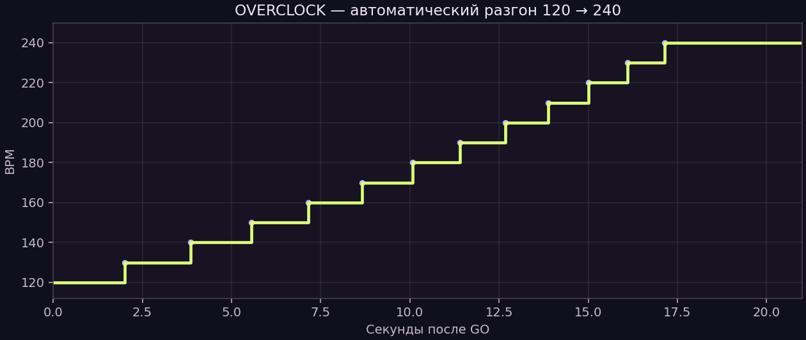
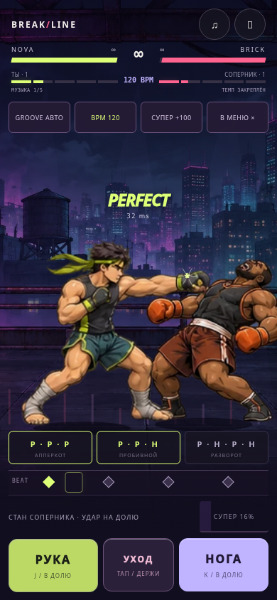
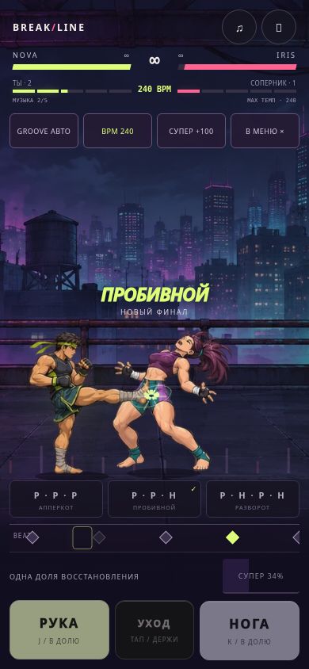
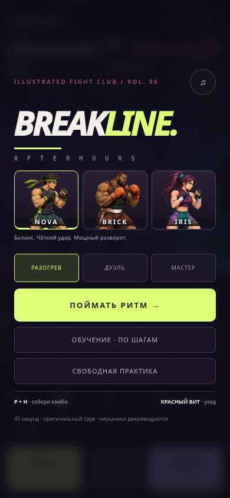
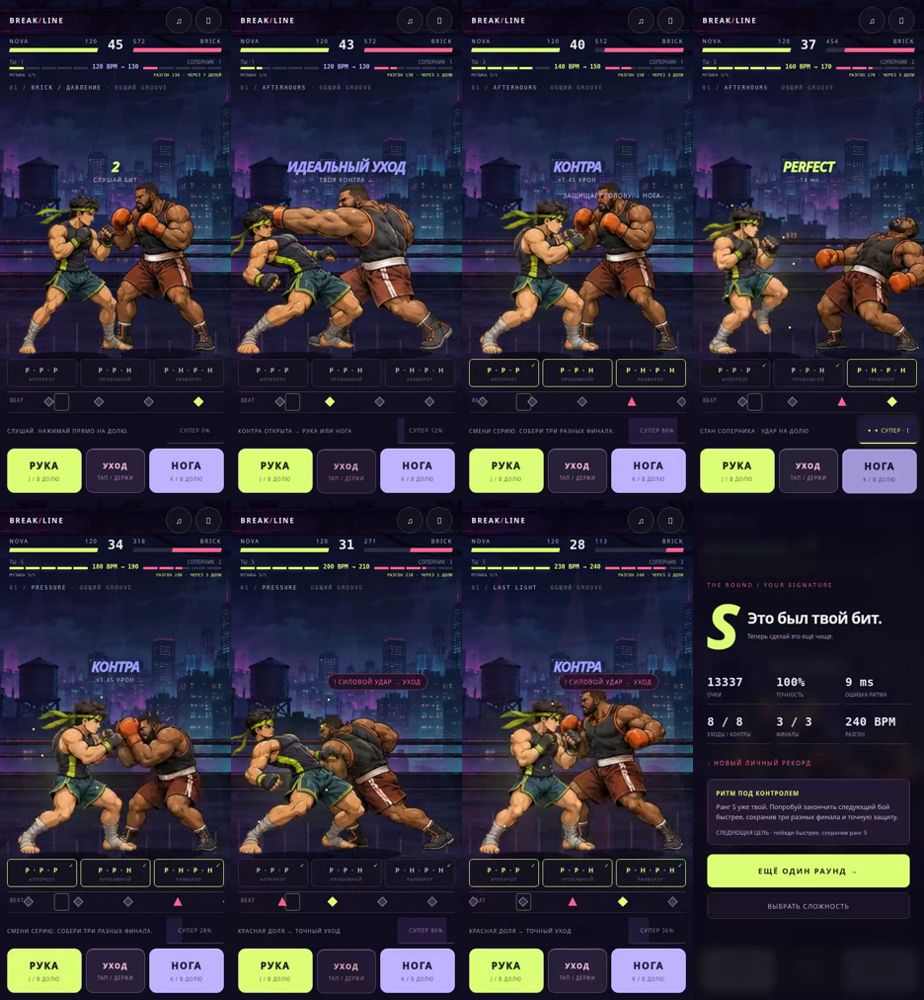
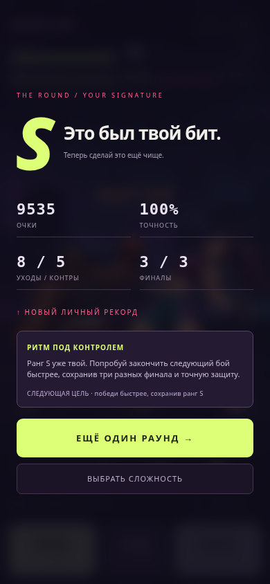
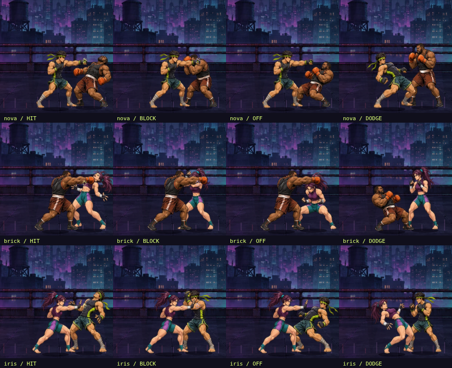

Автоматический разгон 120→240, удержание со второго правильного удара, одна доля восстановления обоих после финала и отдельная музыка меню. Три героя / девять рецептов / три супера / 13 уроков. Полная игра/main не заменяются.

+10 BPM на каждом полном четырёхдольном такте, независимо от обеих шкал. Контрольный старт на доле 4 достигает максимума за 17.15 с; при другой позиции начала около 17–18 с. Быстрый бой может завершиться раньше. Groove сохраняет слои/ауру, супер расходует отдельный заряд и не снижает темп. В практике отдельная кнопка BPM: 120 / АВТО / 160 / 200 / 240.


После чистого первого контакта второй верный ввод существующего префикса защищает связку, второй чистый контакт подтверждает стан. Дальше атакуй каждую четверть. OFF, неверная кнопка, пропуск, промах и блок до подтверждения снимают удержание. Во время подтверждённого стана соперник не атакует и не ставит новый блок. Отменяются только угрозы в его интервале; более поздние объявленные доли остаются.

Кадры 0 / 0,25 / 0,5 / 0,75 / 1 beat после реального контактного состояния. Атакующий возвращает ногу и стойку, защитник выходит из реакции. Игровые сроки — ровно 500 ticks, то есть четверть; при 240 BPM это 250 мс. Фотоэффект внутри этой доли, музыка и часы не останавливаются. Во время восстановления действия не проходят. Промах обычного удара / PERFECT-уход наказывает атакующего одной долей, защитник свободен.
24 секунды, по 6 секунд: меню 90 / бой 120 / бой 240 / бой 240 с суперами. Оригинальный production Web Audio, без нормализации, внешних сэмплов или голосов. Не запись Android. На первой загрузке ♫ в самом меню включает звук жестом; начало боя переключает трек без пересоздания AudioContext.
| Сценарий | Пик (1 = 0 dBFS) | RMS |
|---|---|---|
| menu / 90 | 0.247 | 0.0108 |
| battle / 120 | 0.772 | 0.0969 |
| battle / 240 | 0.786 | 0.1142 |
| battle / 240 + суперы | 0.866 | 0.1237 |


3 разных финала · супер 3 · уходы 8 · OFF 0 · 19.4 с.

3 разных финала · супер 2 · уходы 3 · OFF 0 · 14.5 с.

3 разных финала · супер 2 · уходы 4 · OFF 0 · 15.9 с.
Все действия — реальные touchscreen-касания UI. Стратегия читает состояние, прямых команд нанесения урона нет. Для покрытия защиты сначала выполнен уход, затем разные финалы/супер. Видео Chromium немое; это не человек и не физический Android. Уменьшения окон точности ради теста не было.
До 160 прежние окна в мс; выше — коэффициент 160/BPM. Полудольный ввод остаётся OFF. Оригинальный timestamp учитывается перед ещё не разрешённым контактом, без отката уже отыгранного прошлого. Проверены 54 варианта рецепт×скорость, ошибки/блоки/промахи, сроки восстановления в одну долю, весь старый набор ритма/контроля и архивная анатомия. Аудиопроверки: 81 сценарий (120–240, три соперника, модель 0/250/490 мс) подтвердили 1213 сигналов к завершённым угрозам. Это моделирование, не Bluetooth-оборудование.
540 кадров / 18 секунд и 0,5×. Постановочный показ при 120 BPM с учебным зарядом, без атак соперника. Аудио восстановлено тем же движком; пик микса 0.877.



13 согласованных отчётов: rules · combo-hold · threats · feedback · loader · browser · practice · runtime · groove · readability · overclock · live-bouts · reel.
Рисованные модели не деформируются; проверки архивного IK/FK сохранены. Новые recovery используют целые кадры и перенос корня. Физического Android, акустики телефона и человеческой оценки ощущения на 240 BPM нет. Гарантированные рецепты добавлены для ввода игрока, ИИ сохраняет свои одиночные/силовые фразы. Собственные полноценные серии ИИ в этом этапе не добавлены.
HTML SHA-256: 9c3b73aa32484d6877fc90b2c6610a0b4c376817138bcdd5e830b16407c67bb4. Все отчёты соответствуют этому HTML. Ветка afterhours-overclock. CI и фактическая публикация — PROJECT_STATUS.md.